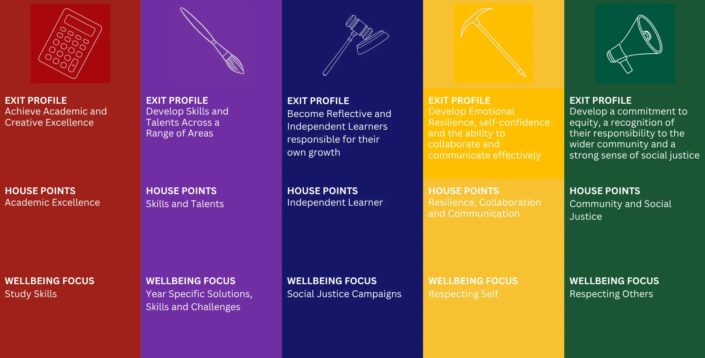

Wellbeing
Wellbeing at Fort Street is for all students. A focus on wellbeing goes beyond the welfare needs of a few individual students and aims for all students to be healthy, happy, successful and productive individuals who are active and positive contributors to the school and society in which they live.
Student Wellbeing
Our Wellbeing program is based on respect: respect for one’s self, respect for others, and respect for the environment. Our aim is to develop the whole school community to attain a sense of perspective, balance and social justice. We believe this will enable students to reach their full potential as global citizens.
The Wellbeing Team
Fort Street emphasises a team approach to student wellbeing and provides counselling, peer support, overnight camps and mentoring as strategies for supporting students’ wellbeing needs. Our wellbeing team is led by the Head Teacher Wellbeing and consists of:
- Counsellors
- Year Advisers
- Deputy Principals
- Learning Support Staff
- Student Support Officer
The Year Advisers, School Counsellors and Deputy Principals are key personnel in the welfare team and are available for students needing advice or assistance on any issue. There are also a range of student initiated and student led activities across the school.
Our Learning Centre Support staff provides outstanding support to individual students. The Learning Support Team co-ordinates individual education plans for a wide range of students.
Wellbeing and support staff
Head Teacher - Wellbeing | Ms Jenny Xu |
SPE - Senior Psychologist Education Department | Ms Jean Kidd |
School Counsellors | Ms Miori Shino and Ms Meg Huckstepp-Lowe |
Student Support Officers (SSO) | Ms Sintra Zorlu |
Learning Support | Ms Jill Ryan and Ms Alissa Tan |
Our Year Advisors
Year Group | Adviser | Assistant Adviser |
Year 7 | Ms Amelia Drinkwater | Mr Andrew Tennent |
Year 8 | Mr Ben Clarke | Ms Fiona Richards |
Year 9 | Ms Maddy Cove | Mr Bradley Sarif |
Year 10 | Mr Arkady De Jong | Mr Hugh O'Neill |
Year 11 | Mr David Latimer | Ms Hyun Cho |
Year 12 | Mr Derek Patulny | Ms Helen Thompson |
Student support officers (SSOs) work in schools to enhance the wellbeing and learning outcomes of students. They come from a diversity of backgrounds. An SSO may have a diploma or higher qualification in social work, youth work or other related discipline such as community service. They all have experience working with young people to improve their wellbeing and mental health. SSOs work closely with the school counselling service and the school’s wellbeing team.
Student Support Officers
SSOs support the implementation of the school’s whole-of-school approach to wellbeing, helping students develop social and emotional skills through targeted strengths-based programs and strategies that build resilience, coping skills and positive relationships working with students one-on-one or in small groups.
They also have a pivotal role in working collaboratively with external and other government agencies in their support of students and their families. Students might be referred to the SSO for support in areas such as bullying, developing self-esteem, resilience, conflict resolution or to be connected to local external support and youth services.
At Fort Street we currently one SSO onsite:
Ms Sintra Zorlu
Students who wish to see the SSO can self refer to their office Monday to Friday at recess and lunch. You find can the SSO office between W18 & W19 in the Wilkins building.
Students can make an appointment with the SSO here (opens in new window)
Students can also visit the FSHS Student Support Portal (opens in new window) for resources as well as the additional resources listed below.
Online Resources for students
eHeadspace (opens in new window)
Kids Helpline (opens in new window)
Reach Out (opens in new window)
The Butterfly Foundation (opens in new window)
Twenty10 (opens in new window)
Beyond Blue (opens in new window)
TransHub (opens in new window)
Smiling Mind (opens in new window)
Mental Health Line (opens in new window)
Lifeline (opens in new window)
Qendo Endometriosis Support (opens in new window)
BiteBack (opens in new window)
Online Resources for Parents and Carers
Raising Children Network (opens in new window)
Parent Line (opens in new window)
Common Sense Media (opens in new window)
Translating and Interpreter Service (opens in new window)
ADHD Support Australia (opens in new window)
Headstart (opens in new window)
ReachOut Parents Forum (opens in new window)
The Embrace Project (opens in new window)
Transcend Australia (opens in new window)
Batyr Parent resource library (opens in new window)
Reframing Autism (opens in new window)
Parents of Gender Diverse Children (opens in new window)
The school counselling service includes school counsellors and school psychologists. Our school counselling staff are highly skilled and play a crucial role, in supporting children and young people to thrive and succeed at school, making a real difference in the lives of children and young people.
About the school counselling service
School counselling staff support students by providing a psychological counselling, assessment and intervention service.
The school counselling service works directly with students to help them with issues related to learning, peer and family relationships, and managing emotions such as depression, anxiety, worry or isolation.
At Fort Street we currently have a school counsellor on site every day:
Ms Miori Shino: Monday, Tuesday and Friday Ms Meg Huckstepp-Lowe: Wednesday and Thursday
Special knowledge, skills and experience
Our school counselling staff are uniquely qualified members of the school wellbeing team. They apply expertise in mental health, learning, and behaviour to help children and young people succeed academically, socially, behaviourally, and emotionally.
School counselling staff work with teachers, families, school executive, and other professionals to create safe, healthy, and supportive learning environments that strengthen connections between home, school, and the community.
Students and parents can contact their school counsellor or school psychologist directly through the school. School counsellors and school psychologists:
- Provide counselling to students individually or in groups
- Assess students with specific needs
- Work collaboratively with teachers and specialist staff
- Help families understand and manage their children’s learning and mental health needs
- Liaise with external agencies and other mental health professionals to provide coordinated, wrap around support for individual students.
Useful links
Information for parents can be found on the Department of Education website at the links below:
Wellbeing Framework
Fort Street structures its Wellbeing program around a framework that aligns the school’s Exit Profile and House system. Using this framework, wellbeing focused programs are delivered via small groups (Fortunae classes) and whole year meetings to enable our dedicated wellbeing team to provide guidance, support and leadership to every student throughout their journey at FSHS.
The Wellbeing Framework sets out 5 focus points that each year group follows and develops as they progress through high school. These include:
- Respecting Self
- Respecting Others
- Social Justice Campaigns
- Study Skills
- Year Specific Skills and Challenges (eg Transitioning to High School, Developing Leadership, Post-School Opportunities)
The table below sets out how the House system, Exit Profile and Wellbeing programs are aligned.

We are committed to closing the achievement gap for Aboriginal and Torres Strait Islander students. We know that we need to learn about, nurture and value the cultural identity of our Aboriginal students to help them be successful learners.
We welcome Aboriginal and Torres Strait Islander family members, parents and carers, as well as community members to our school so that we can get to know each other, learn about the local Aboriginal community and develop shared goals and plans for Aboriginal students.
The Aboriginal Education Policy confirms the NSW Department of Education’s commitment to improvement in educational outcomes and wellbeing for Aboriginal and Torres Strait Islander students.
Our school welcomes students, families and community members from all cultural backgrounds. We appreciate difference and diversity and aim to provide a culturally inclusive and responsive environment that benefits all students.
Our teaching and learning programs develop intercultural understanding, promote positive relationships and enable all students to participate as active Australian and global citizens. Our school fosters student wellbeing and community harmony by implementing anti-racism and anti-discrimination strategies that encourage engagement by parents and carers from all backgrounds.
The Multicultural Education Policy outlines the NSW Department of Education’s commitment to providing opportunities that enable all students to achieve equitable education and social outcomes and participate successfully in our culturally diverse society.
The Anti-Racism Policy confirms the department’s commitment to rejecting all forms of racial discrimination in NSW public schools and eliminating expressions of racism in its learning and working environments.
For more information refer to:
Supporting English language learners
Learning English is essential for success at school and effective participation in Australian society. We can provide specialist support to help students learning English as an additional language or dialect (EAL/D).
For more information refer to: EAL/D education.
Supporting refugee students
Schools offer safety, support and security to help refugee students adjust to life in Australia and participate successfully in education. Targeted support strategies are provided to assist refugee students in NSW public schools.
For more information refer to: Supporting refugee students.
Find out more about Learning Support.
Bullying of any kind is not acceptable in NSW schools.
The NSW anti-bullying (opens in new window) website brings together information and resources for teachers, students, parents and carers. It helps to identify, prevent and respond effectively to student bullying, including online bullying. It provides information about online safety and what you can do if your child has been bullied, witnessed bullying or been involved in bullying.
For more information on anti-bullying strategies for NSW public schools refer to the department’s Bullying of Students – Prevention and Response Policy.
For information on racial bullying and anti-racism education for NSW public schools refer to:
Student leadership helps young people find their voices, participate in decision-making, and understand their rights and responsibilities as active citizens. It helps students have a real impact on their learning and school environment and prepares them to participate meaningfully in their community.
Students can be leaders in the classroom, through their actions in the playground, through their support for others, or their involvement in academic, sporting, cultural or local community events or projects.
For more information about opportunities in NSW public schools visit Student voice and leadership.
Visit Our principal and staff to learn about our wellbeing and specialist support staff.
Student Health
Teaching and support staff at Fort Street High School undertake regular first aid training in order to be able to support our students. This includes but is not limited to CPR and anaphylaxis training.
Students who are not well should not attend school. Parents should advice the school of the absence via the Sentral Parent Portal. A medical certificate may be requested for extended absences.
Our office area has dedicated sick bay rooms and is also equipped with a defibrillator.
Students who are injured or become ill during the school day should inform their teacher who will send a note with the student to Reception. First Aid office staff will monitor students in Sick Bay and a decision will be made to contact parents/carers if a student needs to be collected from school.
Students are not to call their parents or leave school without attending Sick Bay.
Department of Education Policy prohibits the issue of medications such as Panadol and Aspirin etc by school staff. Students who are asthmatic, anaphylactic or diabetic should carry the required medications with them at all times. Students who have been issued with an Epinephrine Autoinjector (Epipen) must keep one in their bag and also provide a spare EpiPen to the school office to be kept in the medical area. A school EpiPen and Ventolin inhaler are included in all First Aid kits taken on excursions.
Parents and Carers must ensure all Student Health plans are current and up to date and all provided inhalers or Epipens are within their expiry date.
Students who require prescription medication at school should submit the medication along with a signed letter from the parent advising dosage to Office Staff at Reception. No other medications should be brought into the school.
For any questions relating to health conditions please contact the Front Office staff on 8585 1600.
Need support for your child's wellbeing?
Get in touch to talk about the right support for your child.
Find out how we support students with disability or additional learning needs.
Get to know our principal and staff, who work together to create a positive school culture.